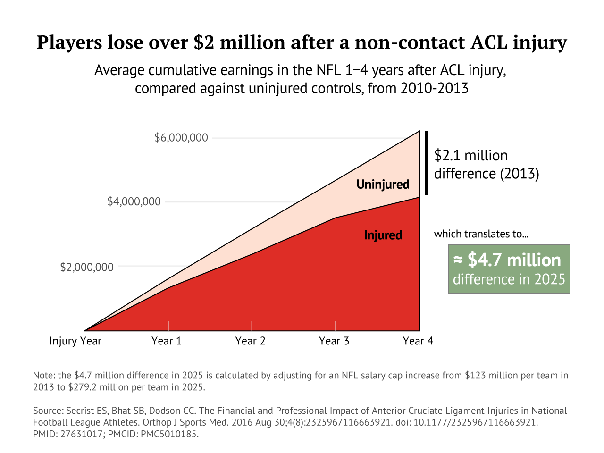
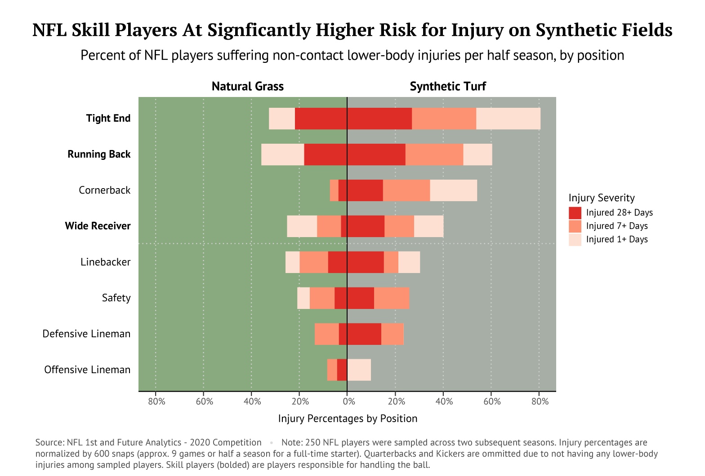

The National Football League (NFL) has grown to be the United States' most popular sport for the past 53 years, with 41% of U.S. adults ranking it as their favorite sport in 2024. The Super Bowl alone garners over six times the number of views as the NBA Finals (115.1 million vs 17.8 million).
Despite football's overwhelming popularity in the U.S., it does not even rank in the top 3 most popular youth sports, largely due to its reputation for violence and injury. To reduce contact-related injuries, the NFL has assembled some of the world's best medical teams and has experienced numerous advances in helmet technology and safety measures over the past few years.
However, an equally devastating set of injuries occur without player-to-player contact. These non-contact injuries impact ligaments and bones in players' lower-bodies and are often a result of sharp pivots on the playing surface, with recovery times spanning from a few days to over a year.
A.J. Green (left), Odell Beckham Jr. (center), and Dez Bryant (right) were among the NFL's premier wide receivers in the 2010s, collectively earning 13 Pro Bowl selections and 5 All-Pro selections (the game's highest award) between 2011-2017. They altogether amassed 22,877 receiving yards and each finished among the top 25 receiving yard totals during the decade. Despite their brilliance early in their careers, these stars exemplify how non-contact injuries can severely impact even the best in the NFL.
A.J. Green missed the entire 2019 season after suffering a pedal ankle sprain in training camp prior to the season's start, landing awkwardly on his left foot after going up for a catch. Green later mentioned being upset with the condition of the practice field the injury occurred on.
Odell Beckham Jr. tore his left knee's anterior cruciate ligament (ACL) while running after a defender who had intercepted a pass in a Week 7 game during the 2020 season, missing the rest of the season and requiring surgery.
Dez Bryant fractured the fifth metatarsal in his right foot on a hard plant in the first game of the 2015 NFL season, requiring surgery and a screw to be placed in his foot.
The NFL has blossomed into a multi-billion dollar industry, with minimum player salaries starting at $610,000 each year and extending to $60 million over just one season. However, non-contact injuries can spell major trouble, not only for player performances, but also financially. Missing games, retiring early, or failing to sign a large contract extension due to injury can be devastating and result in a significant loss of money.
An ACL injury, such as the one suffered by Odell Beckham Jr., are especially catastrophic as they almost always necessitate surgery and a multi-month recovery process.
There is, however, one potential fix that the NFL can make to lessen the prevalence of these non-contact injuries. Synthetic turf surfaces, often used for their lower maintenance costs, greater durability, and ability to enable stadiums to host different events (e.g., concerts), make up 14 of the 32 NFL teams' home stadiums. The rest of the teams use natural grass fields. When rolled out for games, synthetic turf can lead to uneven or slippery surfaces that become amplified when players are sprinting and pivoting at upwards of 23 miles per hour. These turf imperfections have real consequences for the athletes who compete on them.
By moving away from synthetic turf fields in favor of natural grass, the NFL can tackle the growing problem of non-contact injuries. The NFL should invest in natural grass fields as a committment to their players: one almost as strong as the players' committment to the game.
This data narrative was inspired by my own experiences playing football in high school. Whenever I would tell people about my past playing experiences, one of the first questions they would ask me would be about how often high-impact injuries and concussions occurred during play. As someone who never had high-impact injuries but did suffer two serious knee injuries, I was interested in shedding light on these often-overlooked but just as detrimental injuries.
This project was created as the final project for the DATA 1500 course at Brown University under the instruction of Reuben Fischer-Baum. The dataset used in the first and final visualizations comes from the NFL 1st and Future, which is the NFL's annual Super Bowl competition aimed at improving player health, safety, and performance. The 2020 analytics competition, from which this dataset originates, specifically includes three different CSVs with injury, play, and advanced analytics data of 250 NFL players over the course of two consecutive seasons. The second visualization's yards/game and Pro Bowl selection data comes from Pro Football Reference (A.J. Green, Odell Beckham Jr., Dez Bryant) and the injury data comes from Draft Sharks (A.J. Green, Odell Beckham Jr., Dez Bryant). Finally, the third visualization's data comes from Secrist et al.'s paper titled The Financial and Professional Impact of Anterior Cruciate Ligament Injuries in National Football League Athletes.
In terms of images used in this project, the background photos for sections "The Money" and "The Fix" come from Giants.com, the background photo for the opening title comes from Ewing Cole, and the background photos for the section "The Stars" come from CBS Sports (A.J. Green), North Jersey Record (Odell Beckham Jr.), and Sky Sports (Dez Bryant). The leg used in the first visualization was taken from Adobe Stock images, and the headshots used in the second visualization's interactive components come from Player Profiler (A.J. Green), IMDb (Odell Beckham Jr.), and Pro Football Focus (Dez Bryant).